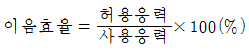
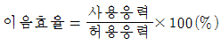
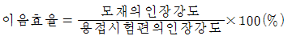
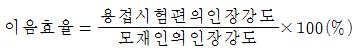

용접산업기사 (2017-05-07 기출문제)
1과목: 용접야금 및 용접설비제도
1. 탄소강에서 탄소의 함유량이 증가할 경우에 나타나는 현상은?
- 경도증가, 연성감소
- 경도감소, 연성감소
- 경도증가, 연성증가
- 경도감소, 연성증가
(정답률: 87%)

2. 담금질시 재료의 두께에 따라 내 •외부의 냉각속도 차이로 인하여 경화되는 깊이가 달라져 경도차이가 발생하는 현상을 무엇이라고 하는가?
- 시효경화
- 질량효과
- 노치효과
- 담금질효과
(정답률: 56%)
3. 다음 중 펄라이트의 조성으로 옳은 것은?
- 페라이트 + 소르바이트
- 페라이트 + 시멘타이트
- 시멘타이트 + 오스테나이트
- 오스테나이트 + 트루스타이트
(정답률: 79%)
4. 다음 중 금속조직에 따라 스테인리스강을 3종류로 분류하였을 때 옳은 것은?
- 마텐자이트계, 페라이트계, 펄라이트계
- 페라이트계, 오스테나이트계, 펄라이트계
- 마텐자이트계, 페라이트계, 오스테나이트계
- 페라이트계, 오스테나이트계, 시멘타이트계
(정답률: 65%)
5. 용접작업에서 예열을 실시하는 목적으로 틀린 것은?
- 열영향부와 용착 금속의 경화를 촉진하고 연성을 감소시킨다.
- 수소의 방출을 용이하게 하여 저온 균열을 방지한다.
- 용접부의 기계적 성질을 향상 시키고 경화 조직의 석출을 방지시킨다.
- 온도 분포가 완만하게 되어 열응력의 감소로 변형과 잔류 응력의 발생을 적게 한다.
(정답률: 81%)
6. 강의 조직을 개선 또는 연화시키기 위해 가장 흔히 쓰이는 방법이며, 주조 조직이나 고온에서 조대화된 입자를 미세화 시키기 위해 Ac3점 또는 Ac1 점 이상 20∼50℃로 가열 후 노냉시키는 풀림 방법은?
- 연화 풀림
- 완전 풀림
- 항온 풀림
- 구상화 풀림
(정답률: 40%)
7. 일반적인 고장력강 용접시 주의해야할 사항으로 틀린 것은?
- 용접봉은 저수소계를 사용한다.
- 위빙 폭을 크게 하지 말아야 한다.
- 아크 길이는 최대한 길게 유지한다.
- 용접 전 이음부 내부를 청소한다.
(정답률: 92%)
8. 다음 중 용접성이 가장 좋은 강은?
- 1.2%C 강
- 0.8%C 강
- 0.5%C 강
- 0.2%C 이하의 강
(정답률: 81%)
9. 담금질한 강을 실온까지 냉각한 다음, 다시 계속하여 실온 이하의 마텐자이트 변태 종료 온도까지 냉각하여 잔류오스테나이트를 마텐자이트로 변화시키는 열처리는?
- 심랭 처리
- 하드 페이싱
- 금속 용사법
- 연속 냉각 변대 처리
(정답률: 63%)
10. 다음 중 건축 구조용 탄소 강관의 KS 기호는?
- SPS 6
- SGT 275
- SRT 275
- SNT 275A
(정답률: 48%)
11. 다음 선의 용도 중 가는 실선을 사용하지 않는 것은?
- 지시선
- 치수선
- 숨은선
- 회전단면선
(정답률: 75%)
12. 용접부 표면의 형상과 기호가 올바르게 연결된 것은?
- 토우를 매끄럽게 함 :

- 동일 평면으로 다듬질 :

- 영구적인 덮개 판을 사용 :

- 제거 가능한 이면 판재 사용 :

(정답률: 92%)
13. 다음 중 치수 기입의 원칙으로 틀린 것은?
- 치수는 중복기입을 피한다.
- 치수는 되도록 주 투상도에 집중시킨다.
- 치수는 계산하여 구할 필요가 없도록 기입한다.
- 관련되는 치수는 되도록 분산시켜서 기입한다.
(정답률: 90%)
14. 다음 용접의 명칭과 기호가 맞지 않는 것은?
- 심 용접 :

- 이면 용접 :

- 겹침 접합부 :

- 가장자리 용접 :

(정답률: 75%)
15. 다음 중 SM 45C 의 명칭으로 옳은 것은?
- 기계 구조용 탄소 강재
- 일반 구조용 각형 강관
- 저온 배관용 탄소 강관
- 용접용 스테인리스강 선재
(정답률: 82%)
16. 치수 기입의 방법을 설명한 것으로 틀린 것은?
- 구의 반지름 치수를 기업할 때는 구의 반지름 기호인 Sø 를 붙인다.
- 정사각형 변의 크기 치수 기입시 치수 앞에 정사각형 기호 □ 를 붙인다.
- 판재의 두께 치수 기입시 치수 앞에 두께를 나타내는 기호 t 를 붙인다.
- 물체의 모양이 원형으로서 그 반지름 치수를 표시할 때는 치수 앞에 R 을 붙인다.
(정답률: 77%)
17. 다음 중 각기둥이나 원기둥을 전개할 때 사용하는 전개도법으로 가장 적합한 것은?
- 사진 전개도법
- 평행선 전개도법
- 삼각형 전개도법
- 방사선 전개도법
(정답률: 68%)
18. 다음 중 가는 1 점 쇄선의 용도가 아닌 것은?
- 중심선
- 외형선
- 기준선
- 피치선
(정답률: 83%)
19. 다음 중 스케치 방법이 아닌 것은?
- 프린트법
- 투상도법
- 본뜨기법
- 프리핸드법
(정답률: 73%)
20. KS 의 부문별 기호 연결이 잘못된 것은?
- KS A - 기본
- KS B -기계
- KSC - 전기
- KSD - 건설
(정답률: 82%)
2과목: 용접구조설계
21. 다음 중 용접 균열 시험법은?
- 킨젤 시험
- 코머렐 시험
- 슈나트 시험
- 리하이 구속 시험
(정답률: 55%)
22. 중판 이상의 용접을 위한 홈 설계 요령으로 틀린 것은?
- 루트반지름은 가능한 크게 한다.
- 홈의 단면적을 가능한 한 작게 한다.
- 적당한 루트면과 루트간격을 만들어 준다.
- 전후좌우 5° 이하로 용접봉을 운봉할 수 없는 홈 각도를 만든다.
(정답률: 75%)
23. 용착부의 인장응력이 5kgf/mm2 용접선 유효길이가 80mm이며, V형 맞대기로 완전 용입인 경우 하중 8000kgf에 대한 판 두께는 몇 mm인가? (단, 하중은 용접선과 직각 방향이다.)
- 10
- 20
- 30
- 40
(정답률: 73%)
24. 일반적인 용접의 장점으로 틀린 것은?
- 수밀, 기밀이 우수하다.
- 이종재료 접합이 가능하다.
- 재료가 절약되고 무게가 가벼워진다.
- 자동화가 가능하며 제작 공정수가 많아진다.
(정답률: 74%)
25. 용접 전 길이를 적당한 구간으로 구분한 후 각 구간을 한칸씩 건너 뛰어서 용접한 후 다시금 비어 있는 곳을 차례로 용접하는 방법으로 잔류 응력이 가장 적은 용착법은?
- 후퇴법
- 대칭법
- 비석법
- 교호법
(정답률: 81%)
26. 다음 중 용접부 예열의 목적으로 틀린 것은?
- 용접부의 기계적 성질을 향상시킨다.
- 열응력의 감소로 잔류응력의 발생이 적다.
- 열영향부와 용착금속의 경화를 방지한다.
- 수소의 방출이 어렵고, 경도가 높아져 인성이 저하한다.
(정답률: 90%)
27. V형 맞대기 용접에서 판 두께가 10mm, 용접선의 유효길이가 200mm 일 때, 5N/mm2의 인장응력이 발생한다면 이 때 작용하는 인장하중은 몇 N 인가?
- 3000
- 5000
- 10000
- 12000
(정답률: 80%)
28. 용접 작업 시 용접 지그를 사용했을 때 얻는 효과로 틀린 것은?
- 용접 변형을 증가시킨다.
- 작업 능률을 향상시킨다.
- 용접 작업을 용이하게 한다.
- 제품의 마무리 정도를 향상시킨다.
(정답률: 93%)
29. 강자성체인 철강 등의 표면 결함 검사에 사용되는 비파괴 검사 방법은?
- 누설 비파괴 검사
- 자기 비파괴 검사
- 초음파 비파괴 검사
- 방사선 비파괴 검사
(정답률: 57%)
30. 다음 용착법 중 각 층마다 전체 길이를 용접하며 쌓는 방법은?
- 전진법
- 후진법
- 스킵법
- 빌드업법
(정답률: 90%)
31. 용접부의 결함 중 구조상 결함이 아닌 것은?
- 변형
- 기공
- 언더컷
- 오버랩
(정답률: 83%)
32. 가접 시 주의해야 할 사항으로 옳은 것은?
- 본 용접자보다 용접 기량이 낮은 용접자가 가용접을 실시한다.
- 용접봉은 본 용접 작업 시에 사용하는 것보다 가는 것을 사용한다.
- 가용접 간격은 일반적으로 판 두께의 60∼80배 정도로 하는 것이 좋다.
- 가용접 위치는 부품의 끝 모서리나 각 등과 같이 응력이 집중되는 곳에 가접한다.
(정답률: 70%)
33. 용접 구조물을 조립하는 순서를 정할 때 고려사항으로 틀린 것은?
- 용접 변형을 쉽게 제거할 수 있어야 한다.
- 작업환경을 고려하여 용접자세를 편하게 한다.
- 구조물의 형상을 고정하고 지지할 수 있어야 한다.
- 용접진행은 부재의 구속단을 향하여 용접한다.
(정답률: 88%)
34. 연강판 용접을 하였을 때 발생한 용접 변형을 교정하는 방법이 아닌 것은?
- 롤러에 의한 방법
- 기계적 응력완화법
- 가열 후 해머링하는 법
- 얇은 판에 대한 점 수축법
(정답률: 36%)
35. 비파괴 검사법 중 표면결함 검출에 사용되지 않는 것은?
- PT
- MT
- UT
- ET
(정답률: 59%)
36. 용접부에 잔류응력을 제거하기 위하여 응력제거 풀림처리를 할 때 나타나는 효과로 틀린 것은?
- 충격 저항의 증대
- 크리프 강도의 향상
- 응력 부식에 대한 저항력의 증대
- 용착 금속 중의 수소 제거에 의한 경도 증대
(정답률: 56%)
37. 맞대기 용접 이음에서 이음 효율을 구하는 식은?




(정답률: 56%)
38. 얇은 판의 용접 시 주로 사용하는 방법으로 용접부의 뒷면에서 물을 뿌려주는 변형 방지법은?
- 살수법
- 도열법
- 석면포 사용법
- 수냉 동판 사용법
(정답률: 87%)
39. 다음 중 비파괴시험법에 해당되는 것은?
- 부식시험
- 굽힘시험
- 육안시험
- 충격시험
(정답률: 83%)
40. 판두께 25mm이상인 연강판을 0℃ 이하에서 용접할 경우 예열하는 방법은?
- 이음의 양쪽 폭 100mm 정도를 40∼75℃로 예열하는 것이 좋다.
- 이음의 양쪽 폭 150mm 정도를 150∼200℃로 예열하는 것이 좋다.
- 이음의 한쪽 폭 100mm 정도를 40∼75℃로 예열하는 것이 좋다.
- 이음의 한쪽 폭 150mm 정도를 150∼200℃로 예열하는 것이 좋다.
(정답률: 70%)
3과목: 용접일반 및 안전관리
41. 불활성가스 텅스텐 아크용접에 대한 설명으로 틀린 것은?
- 직류 역극성으로 용접하면 청정작용을 얻을 수 있다.
- 가스 노즐은 일반적으로 세라믹 노즐을 사용한다
- 불가시 용접으로 용접 중에는 용접부를 확인할 수 없다.
- 용접용 토치는 냉각 방식에 따라 수냉식과 공랭식으로 구분된다.
(정답률: 79%)
42. 다음 중 아크 용접시 발생되는 유해한 광선에 해당되는 것은?
- X-선
- 자외선
- 감마선
- 중성자선
(정답률: 86%)
43. 다음 중 교류 아크 용접기에 해당되지 않는 것은?
- 발전기형 아크 용접기
- 탭 전환형 아크 용접기
- 가동 코일형 아크 용접기
- 가동 철심형 아크 용접기
(정답률: 66%)
44. 가스절단에서 예열불꽃이 약할 때 일어나는 현상으로 가장 거리가 먼 것은?
- 드래그가 증가한다.
- 절단면이 거칠어진다.
- 절단 속도가 늦어진다.
- 절단이 중단되기 쉽다.
(정답률: 50%)
45. 모재 두께가 다른 경우에 전극의 과열을 피하기 위하여 전류를 단속하여 용접하는 점용접법은?
- 맥동 점 용접
- 단극식 점 용접
- 인터랙 점 용접
- 다전극 점 용접
(정답률: 50%)
46. U형, H형의 용접홈을 가공하기 위하여 슬로우 다이버전트로 설계된 팁을 사용하여 깊은 홈을 파내는 가공법은?
- 스카핑
- 수중절단
- 가스 가우징
- 산소창 절단
(정답률: 69%)
47. 피복제 중에 석회석이나 형석을 주성분으로 사용한 것으로 용착금속 중의 수소 함유량이 다른 용접봉에 비해 약 1/10 정도로 현저하게 적은 피복 아크 용접봉은?
- E4301
- E4311
- E4313
- E4316
(정답률: 85%)
48. 일반적인 가동 철심형 교류 아크용접기의 특성으로 틀린 것은?
- 미세한 전류 조정이 가능하다.
- 광범위한 전류 조정이 어렵다.
- 조작이 간단하고 원격 제어가 된다.
- 가동철심으로 누설자속을 가감하여 전류를 조정한다.
(정답률: 56%)
49. 자동 및 반자동 용접이 수동 아크 용접에 비하여 우수한 점이 아닌 것은?
- 용입이 깊다.
- 와이어 송급 속도가 빠르다.
- 위보기 용접자세에 적합하다.
- 용착금속의 기계적 성질이 우수하다.
(정답률: 83%)
50. 산소-아세틸렌가스 용접의 특정으로 틀린 것은?
- 용접 변형이 적어 후판용접에 적합하다.
- 아크 용접에 비해서 불꽃의 온도가 낮다.
- 열 집중성이 나빠서 효율적인 용접이 어렵다.
- 폭발의 위험성이 크고 금속이 탄화 및 산화될 가능성이 많다.
(정답률: 58%)
51. 다음 용접자세의 기호 중 수평자세를 나타낸 것은?
- F
- H
- V
- O
(정답률: 87%)
52. 가스용접에서 탄산나트륨 15%, 붕사 15%, 중탄산나트륨 70%가 혼합된 용제는 어떤 금속용접에 가장 적합한가?
- 주철
- 연강
- 알루미늄
- 구리합금
(정답률: 47%)
53. 탄산가스 아크 용접에 대한 설명으로 틀린 것은?
- 전자세 용접 이 가능하다.
- 가시 아크이므로 시공이 편리하다.
- 용접전류의 밀도가 낮아 용입이 얕다.
- 용착금속의 기계적, 야금적 성질이 우수하다.
(정답률: 81%)
54. 다음 중 압접에 해당하는 것은?
- 전자빔 용접
- 초음파 용접
- 피복 아크 용접
- 일렉트로 슬래그 용접
(정답률: 65%)
55. 피복 아크 용접봉의 피복 배합제 중 아크 안정제에 속하지 않는 것은?
- 석회석
- 마그네슘
- 규산칼륨
- 산화티탄
(정답률: 48%)
56. 가스용접에서 가변압식 토치의 팁(B형) 250번을 사용하여 표준불꽃으로 용접하였을 때의 설명으로 옳은 것은?
- 독일식 토치의 팁을 사용한 것이다.
- 용접 가능한 판 두께가 250mm 이다.
- 1시간 동안에 산소 소비량이 25리터이다.
- 1시간 동안에 아세틸렌가스의 소비량이 250리터 정도이다.
(정답률: 72%)
57. 정격 2차 전류가 300A, 정격 사용률 50%인 용접기를 사용하여 lOOA 의 전류로 용접을 할 때 허용 사용률은?
- 5.6 %
- 150 %
- 450 %
- 550 %
(정답률: 54%)
58. 불활성가스 텅스텐 아크용접에서 전극을 모재에 접촉시키지 않아도 아크 발생이 되는이유로 가장 적합한 것은?
- 전압을 높게 하기 때문에
- 텅스텐의 작용으로 인해서
- 아크 안정제를 사용하기 때문에
- 고주파 발생장치를 사용하기 때문에
(정답률: 80%)
59. 연강용 피복 아크 용접봉의 종류에서 E4303 용접봉의 피복제 계통은?
- 특수계
- 저수소계
- 일루미나이트계
- 라임티타니아계
(정답률: 72%)
60. 용접작업자의 전기적 재해를 줄이기 위한 방법으로 틀린 것은?
- 절연상태를 확인한 후 사용한다.
- 용접 안전보호구를 완전히 착용한다.
- 무부하 전압이 낮은 용접기를 사용한다.
- 직류용접기보다 교류용접기를 많이 사용한다.
(정답률: 81%)